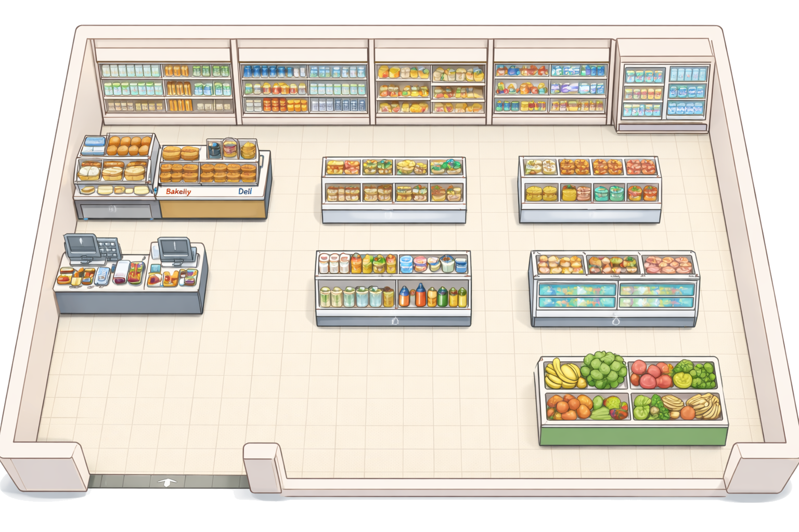

手順
マップをクリック → x,y（%）取得 → 「行をコピー」 → スプレッドシートに貼る

現在の座標：
x =
-
/ y =
-
※ x,y はマップ画像に対する割合（0〜100）です。画面サイズが変わってもズレにくい方式。
スプレッドシート貼り付け用（TSV：タブ区切り）
行をコピー
リセット
ヘッダー例：name / category / brand / area / x / y / keywords